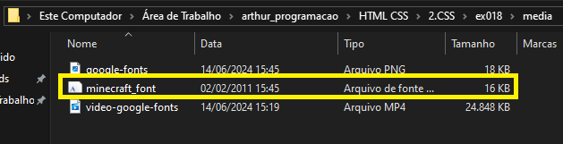
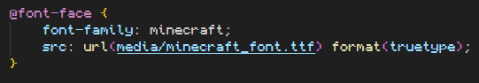

Fontes Externas
Para utilizar fontes externas você precisa delas nos seus arquivos.
Para você trazê-la para o estilo da página, basta usar a regra:
Propriedades:
- font-familiy = Digite um nome para a fonte (Assim como você faz para declarar classes)
- src = url (Local do arquivo da fonte) format (Formato do arquivo)
Tipos de format:
- opentype (.otf)
- truetype (.ttf)
- embedded-opentype
- truetype-aat (Apple Advanced Typography)
- svg
Você pode adicionar vários formatos da mesma fonte de uma vez, basta seprar por vírgula suas url e format.
Exemplo utilizando fonte do minecraft com a imortacao @font-face {}.
Clique aqui para acessar a página anterior.